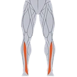

Balance Dome Single-Leg Stand
A balance hold on one leg on a balance dome, with the other knee lifted in front of you. The ankle, calf and hip muscles of the standing leg constantly adjust to the tilting surface, which makes it a demanding balance and rehabilitation exercise.
Lower legs · Balance Dome · Advanced

Muscles worked by the Balance Dome Single-Leg Stand
Primary
Secondary

ShinsTibialis AnteriorAlso called: calf, calves, gastrocnemius, gastroc, soleus, deep calf.
Equipment
Also called: bosu ball, bosu, balance trainer, half ball, dome trainer, half stability ball.
How to do the Balance Dome Single-Leg Stand
- Place the balance dome on a flat floor with the domed side up, next to a wall or a sturdy support.
- Step onto the middle of the dome with one foot and stand tall with your knee slightly bent.
- Shift your weight onto that leg and lift the other knee in front of you until the thigh is about hip height.
- Keep your hips level, your chest tall and your eyes on a fixed point ahead.
- Hold for the planned time, letting your ankle and calf make small corrections.
- Lower the foot, rest and repeat on the other leg.
Form tips
- Learn the two-foot balance dome stand first and keep a wall within reach.
- Press the whole foot into the dome and let your toes spread; do not grip the surface with them.
- Do not look down at your feet; a fixed point ahead helps your balance.
At a glance
| Body part | Lower legs |
|---|---|
| Category | Strength |
| Force type | Static |
| Mechanic | Compound |
| Difficulty | Advanced |
| Equipment | Balance Dome |
| Goals | Rehabilitation, Strength |
| Tags | Rehab, Knee safe, Lower back safe, Shoulder safe, No axial load |
| MET | 6.0 (metabolic equivalent, for calorie estimates) |
| Unilateral | Yes |
| Bodyweight | No |
| Dataset id | balance-dome-single-leg-stand |
Balance Dome Single-Leg Stand in German & Spanish
| German | Balance-Dome Einbeinstand |
|---|---|
| Spanish | Equilibrio a Una Pierna sobre Domo de Equilibrio |
Descriptions, instructions and tips ship in all three languages in the JSON.
Related exercises
Exercise data (JSON)
The record below is exactly what exercises.json ships for this exercise — names, descriptions, instructions and tips in English, German and Spanish.
{
"id": "balance-dome-single-leg-stand",
"name_en": "Balance Dome Single-Leg Stand",
"name_de": "Balance-Dome Einbeinstand",
"name_es": "Equilibrio a Una Pierna sobre Domo de Equilibrio",
"description_en": "A balance hold on one leg on a balance dome, with the other knee lifted in front of you. The ankle, calf and hip muscles of the standing leg constantly adjust to the tilting surface, which makes it a demanding balance and rehabilitation exercise.",
"description_de": "Ein Balance-Halt auf einem Bein auf einem Balance-Dome, das andere Knie vor dir angehoben. Die Sprunggelenk-, Waden- und Hüftmuskeln des Standbeins passen sich ständig der kippenden Fläche an, was die Übung zu einer anspruchsvollen Gleichgewichts- und Rehabilitationsübung macht.",
"description_es": "Un aguante de equilibrio sobre una pierna encima de un domo de equilibrio, con la otra rodilla elevada al frente. Los músculos del tobillo, la pantorrilla y la cadera de la pierna de apoyo se ajustan constantemente a la superficie inclinada, lo que lo convierte en un ejercicio exigente de equilibrio y de rehabilitación.",
"category": "strength",
"force_type": "static",
"mechanic": "compound",
"difficulty": "advanced",
"equipment": "bosu_ball",
"body_part": "lower_legs",
"primary_muscles": [
"gastrocnemius",
"soleus"
],
"secondary_muscles": [
"gluteus_medius",
"hip_flexors",
"tibialis_anterior"
],
"goals": [
"rehabilitation",
"strength"
],
"tags": [
"rehab",
"knee_safe",
"lower_back_safe",
"shoulder_safe",
"no_axial_load"
],
"variation_group": "static-hold",
"is_unilateral": true,
"is_bodyweight": false,
"instructions_en": [
"Place the balance dome on a flat floor with the domed side up, next to a wall or a sturdy support.",
"Step onto the middle of the dome with one foot and stand tall with your knee slightly bent.",
"Shift your weight onto that leg and lift the other knee in front of you until the thigh is about hip height.",
"Keep your hips level, your chest tall and your eyes on a fixed point ahead.",
"Hold for the planned time, letting your ankle and calf make small corrections.",
"Lower the foot, rest and repeat on the other leg."
],
"instructions_de": [
"Lege den Balance-Dome mit der gewölbten Seite nach oben auf einen ebenen Boden, neben eine Wand oder eine stabile Stütze.",
"Steige mit einem Fuß in die Mitte des Domes und stehe aufrecht, das Knie leicht gebeugt.",
"Verlagere dein Gewicht auf dieses Bein und hebe das andere Knie vor dir an, bis der Oberschenkel etwa auf Hüfthöhe ist.",
"Halte die Hüfte waagerecht, die Brust aufrecht und die Augen auf einen festen Punkt vor dir gerichtet.",
"Halte die Position für die geplante Zeit und lass Sprunggelenk und Wade kleine Korrekturen machen.",
"Senke den Fuß, ruhe dich aus und wiederhole mit dem anderen Bein."
],
"instructions_es": [
"Coloca el domo de equilibrio sobre un suelo plano con el lado abombado hacia arriba, junto a una pared o a un apoyo firme.",
"Sube al centro del domo con un pie y ponte erguido con la rodilla ligeramente flexionada.",
"Pasa el peso a esa pierna y levanta la otra rodilla delante de ti hasta que el muslo quede aproximadamente a la altura de la cadera.",
"Mantén las caderas niveladas, el pecho erguido y la mirada en un punto fijo al frente.",
"Mantén la posición durante el tiempo previsto, dejando que el tobillo y la pantorrilla hagan pequeñas correcciones.",
"Baja el pie, descansa y repite con la otra pierna."
],
"tips_en": [
"Learn the two-foot balance dome stand first and keep a wall within reach.",
"Press the whole foot into the dome and let your toes spread; do not grip the surface with them.",
"Do not look down at your feet; a fixed point ahead helps your balance."
],
"tips_de": [
"Lerne zuerst den beidbeinigen Balance-Dome Stand und halte eine Wand in Reichweite.",
"Drücke den ganzen Fuß in den Dome und lass die Zehen sich spreizen; greife die Fläche nicht mit ihnen.",
"Schau nicht auf deine Füße; ein fester Punkt vor dir hilft deiner Balance."
],
"tips_es": [
"Aprende primero la postura con los dos pies sobre el domo de equilibrio y ten una pared al alcance de la mano.",
"Presiona todo el pie contra el domo y deja que los dedos se abran; no agarres la superficie con ellos.",
"No mires hacia tus pies; un punto fijo al frente ayuda a mantener el equilibrio."
],
"met": 6.0,
"images": {
"flat": {
"main": "images/flat/balance-dome-single-leg-stand-main.webp"
}
}
}Fetch just this exercise
const { exercises } = await fetch(
"https://exercise-dataset.com/exercises.json"
).then(r => r.json());
const ex = exercises.find(e => e.id === "balance-dome-single-leg-stand");Free for personal and commercial in-app use with attribution (“Exercise data by RepDB”) — see the license and ready-made attribution snippets. Redistributing the data as a dataset or API is not permitted.